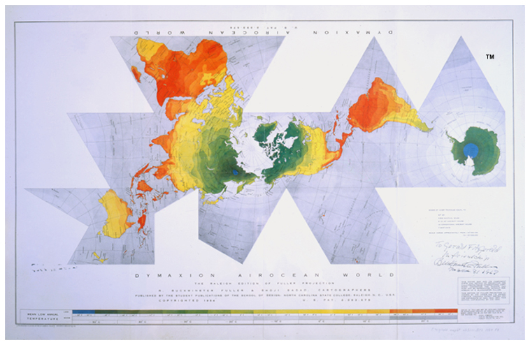

|  |
| Fuller, Richard Buckminster. Dymaxion airocean world: the
Raleigh edition. Raleigh: School of Design, North Carolina State College,
1954. Newberry Library Fitzgerald Map6F G3201.B72 1954 F8. The ™ on the
image above has been added to the digital image of this map and does not appear
on the printed map. The Fuller Projection Map design is a trademarks of the Buckminster Fuller Institute © 1938, 1967, 1992. All rights reserved. www.bfi.org |